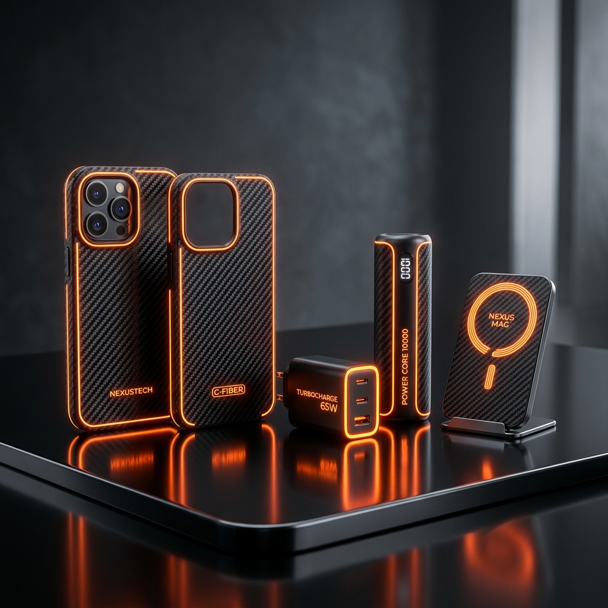

Why OEM Calibrations Matter for Replaced Displays
Have you ever had a smartphone screen replaced at a cheap shop, only to find the touch response laggy, the auto-brightness broken, or the color profile muddy? This isn't just "bad luck." It is the direct consequence of aftermarket display layers missing the critical hardware-level synchronization required by modern mobile chipsets.
At FixPoint, display swaps undergo a rigorous multi-point optical and digital calibration using specialized instrumentation. Our Lead Display Calibration Specialist, Sarah Jenkins, breaks down the technology of display serialization and why OEM standards are non-negotiable.
1. The Display Serialization Problem
Modern manufacturers cryptographically lock display panels to their corresponding logic board. When a phone is booted, the secure enclave processor queries the display controller IC for its unique hardware serialization key. If the keys do not match, the operating system limits native display capabilities as a security precaution.
On Apple iPhones, for instance, a mismatched screen disables True Tone (ambient color matching) and creates persistent system alert warnings, even if the replacement glass is structurally pristine.
2. How We Restore Serialization
To bypass non-genuine software lockouts and restore standard UI velocity, our technicians use specialized EEPROM programmers. We extract the original display calibration data direct from the broken screen's controller microchip, including the specific screen brightness curves and serials. We then flash this dataset directly onto the new replacement display controller, establishing a perfect handshake with the secure CPU enclave.
Sarah Jenkins on Calibration Standards
"Calibration isn't just about making the touch screen function; it's about matching color points. Modern AMOLED panels have highly customized RGB curves. Without digital flashing, your screen runs at high voltage, creating early pixel burn-in."
3. Touch & Digitizer Sensitivity Calibration
Aftermarket panels use cheap capacitive grids that read touch signals unevenly, resulting in "ghost clicks" or unresponsive keyboard edges. Original OEM-grade glass structures contain denser digitizer grids. Post-installation, we perform a 30-point touch test using automated software to ensure the capacitance matches exactly 1:1 with native operating specifications.
4. Ambient Sensor Alignment
Your screen houses complex ambient light and proximity sensors behind the glass. During aftermarket swaps, incorrect adhesive thickness can block these sensors, causing the screen to remain black during phone calls or fail to adjust brightness in dark rooms.
FixPoint Quality Control: We use pre-cut thermal gaskets and UV-curable optical clear adhesives (LOCA) matching factory thickness, ensuring all rear sensors receive correct light flow without obstruction.
Conclusion
A screen replacement is more than just swapping cracked glass; it is a delicate integration of hardware, cryptography, and micro-optics. When looking for repairs, prioritize service centers that employ Level-3 diagnostics, execute EEPROM data flashing, and back their materials with lifetime warranties.
Sarah Jenkins
Sarah Jenkins is FixPoint's Lead Display Calibration Specialist. With over 6 years of specializing in micro-optics, screen refurbishing, and digital calibrations, she maintains strict quality control over display assemblies.
Related Articles

5 Secrets to Extending Refurbished Battery Health
Actionable tips and chemical insights to double the lifespan of your phone battery.
Read ArticleElectronic Waste: The Power of Refurbished Tech
How purchasing pre-owned smartphones keeps electronics out of landfill waste.
Read ArticleHave a Fractured or Glitching Screen?
Avoid poor responsiveness. Book a premium screen replacement with our certified calibration experts today.
Book Screen Replacement